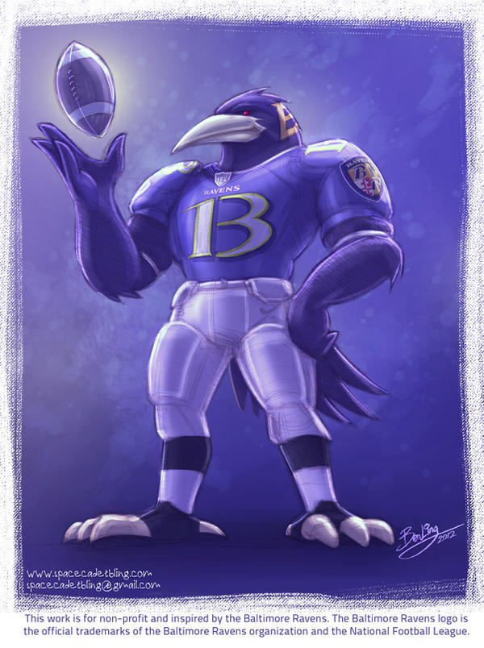

About This Image

This image shows a cartoon-like raven mascot in a football uniform. I chose it because I like the Baltimore Ravens and football.

This image shows a cartoon-like raven mascot in a football uniform. I chose it because I like the Baltimore Ravens and football.